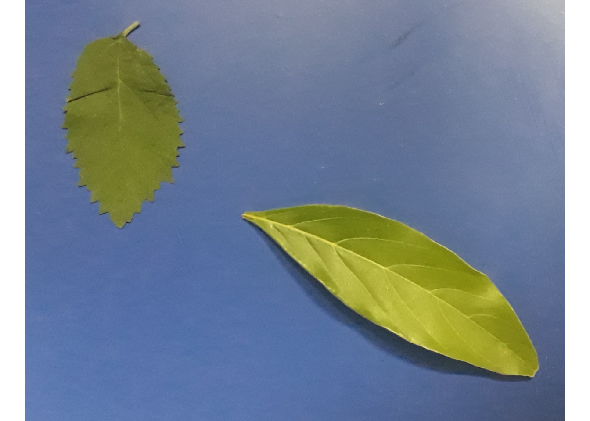
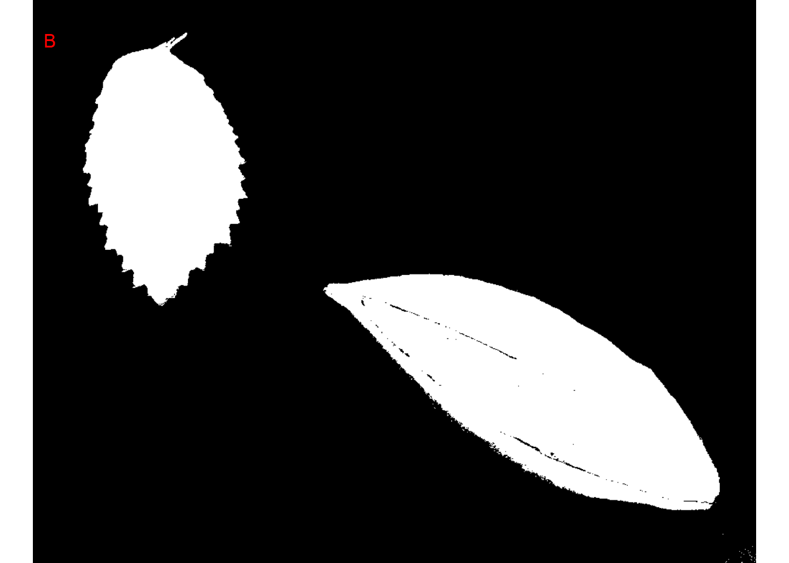
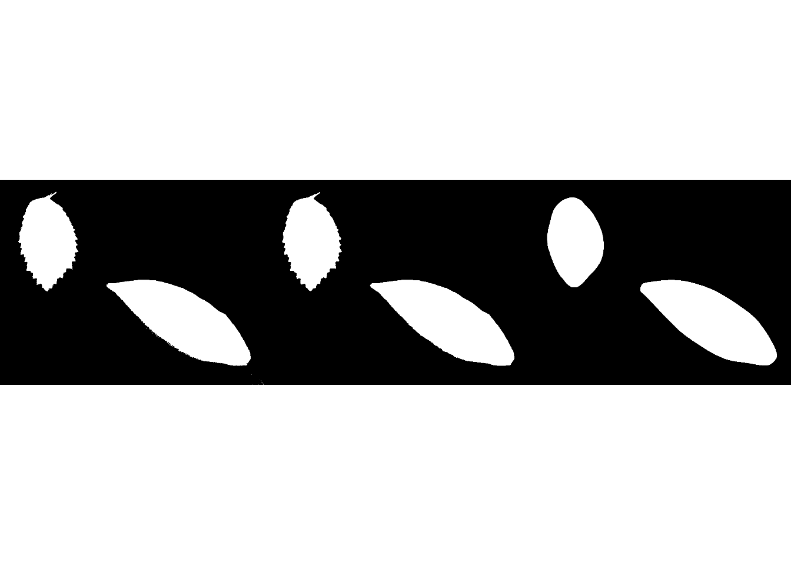
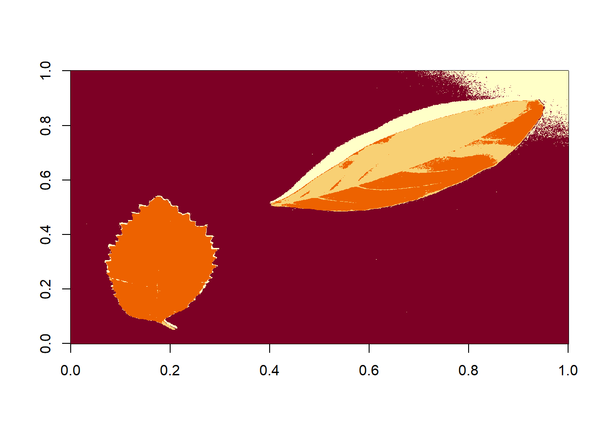
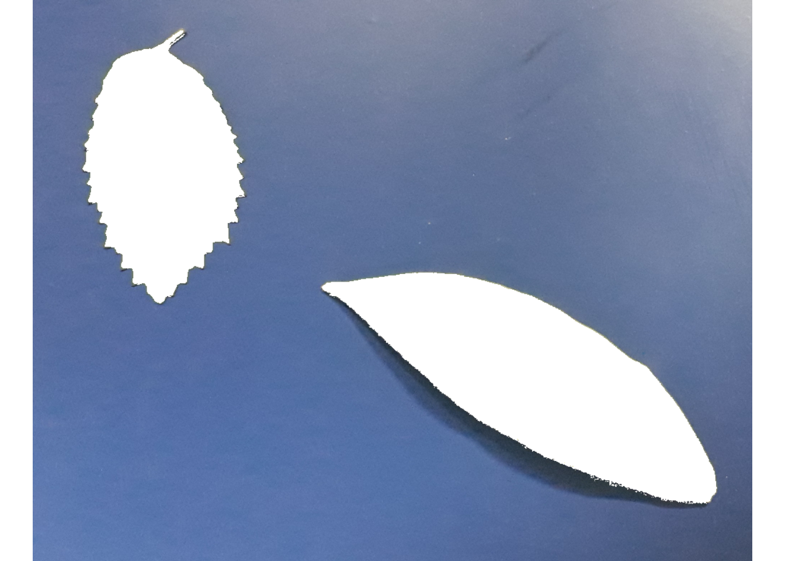
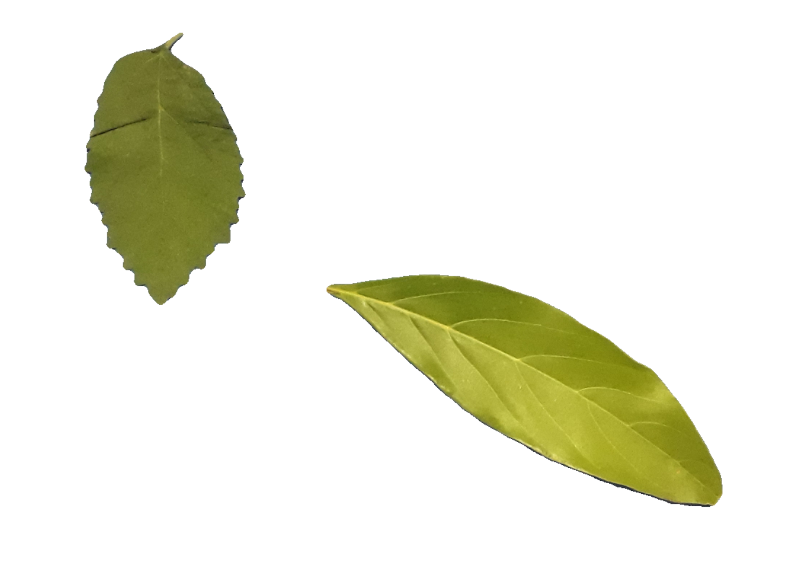
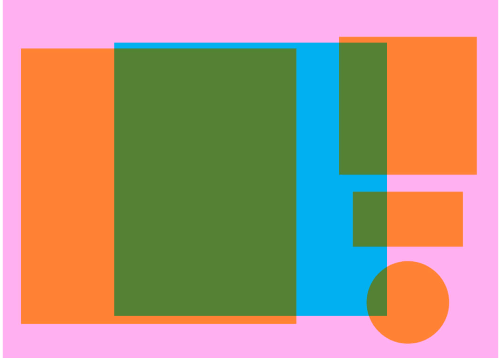
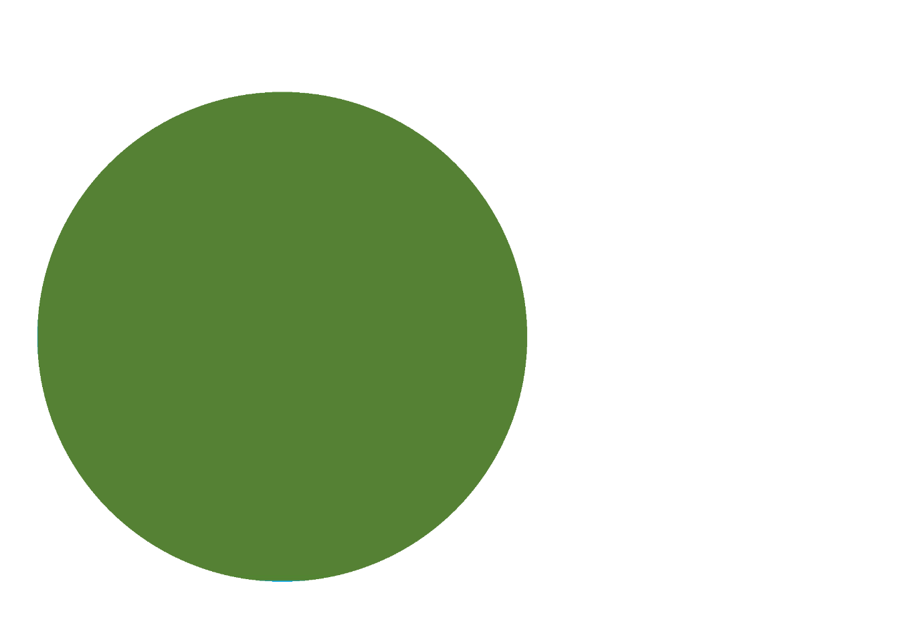

setwd("E:/Desktop/UFSC/cursos/pliman_tut/imgs")Segment objects
1 Directory
2 Import images
library(pliman)
img <-
image_import("folhas.jpg") |>
image_horizontal(plot = TRUE)
apply_fun_to_imgs(pattern = "img_",
fun = image_resize,
rel_size = 50,
dir_processed = "lista_exportada")
## Processing image img_exported.jpg |== | 7% 00:00:00
Processing image img_sb_50_1.jpg |==== | 14% 00:00:00
Processing image img_sb_50_10.jpg |====== | 21% 00:00:00
Processing image img_sb_50_11.jpg |========= | 29% 00:00:00
Processing image img_sb_50_12.jpg |=========== | 36% 00:00:00
Processing image img_sb_50_13.jpg |============= | 43% 00:00:00
Processing image img_sb_50_2.jpg |================ | 50% 00:00:00
Processing image img_sb_50_3.jpg |================== | 57% 00:00:00
Processing image img_sb_50_4.jpg |==================== | 64% 00:00:00
Processing image img_sb_50_5.jpg |====================== | 71% 00:00:00
Processing image img_sb_50_6.jpg |======================== | 79% 00:00:01
Processing image img_sb_50_7.jpg |=========================== | 86% 00:00:01
Processing image img_sb_50_8.jpg |============================= | 93% 00:00:01
Processing image img_sb_50_9.jpg |===============================| 100% 00:00:01 3 Image indexes
In pliman, the following functions can be used to segment image objects.
-
image_binary()to produce a binary (black and white) image. -
image_segment()to produce a segmented image (image objects and a white background). -
image_segment_iter()to segment an image interactively. -
image_segment_kmeans()to segment an image using the k-means algorithm -
image_segment_manual()to segment an image manually -
image_segment_mask()to segment an image interactively
Both functions segment the image based on the value of some image index, which can be one of the RGB bands or any operation with these bands. Internally, these functions call image_index() to calculate these indices.
Here, we use the index"argument to test segmentation based on RGB and its normalized values. Users can also provide their index with the my_index argument.
# Calcule os índices
indexes <-
image_index(img, index = c("R, G, B, NR, NG, NB"),
resize = 30) # 30% of the original size
# Crie um gráfico raster com os valores RGB
plot(indexes)
# Crie um histograma com os valores RGB
plot(indexes, type = "density")
The two peaks represent the leaf (smallest peak) and the background (larger peak). The clearer the difference between these peaks, the better the image segmentation.
4 Binary images
To segment objects, pliman uses the threshold technique (Otsu, 1979)1, that is, a cut-off point (considering the pixel values) is chosen and the image is classified into two classes (foreground and background). We then have a binary image. We can produce this image with image_binary(). This binarization is the key process to all object analysis steps. The better the binarization, the better the results.
By default, image binary applies median filtering in the binary mask so that noises (for example, small dust points) are removed. Users can control whether the filter is applied and its intensity. Let’s to produce a binary image using the index "B" with no filter applied.
binary <-
image_binary(img,
index = "B",
filter = FALSE)
Note that some pixels within the bottom leaf were considered as background and some pixels at the bottom-right corner were considered as foreground. We can improve this binarization by both applying a median filter with the argument filter and filling holes with fill_hull = TRUE. Note how the change in the filter argument impact the results.
bin <- image_binary(img,
index = "B",
fill_hull = TRUE,
show_image = FALSE)[[1]]
bin2 <- image_binary(img,
index = "B",
fill_hull = TRUE,
filter = 2,
show_image = FALSE)[[1]]
bin3 <- image_binary(img,
index = "B",
fill_hull = TRUE,
filter = 30,
show_image = FALSE)[[1]]
image_combine(bin, bin2, bin3, ncol = 3)
5 Automatic segmentation
5.1 Using image indexes
The image_segment() function is used to segment images using image indices. In this example, we will use compare the B and NB index to segment the leaves.
seg1 <-
image_segment(img,
index = c("B, NB"))
5.2 Using k-means algorithm
THe function image_segment_kmeans() segments image objects using clustering by the k-means clustering algorithm. Users need to declare the number of classes after object segmentation using the argument nclasses. By default, two classes are returned.
seg2 <- image_segment_kmeans(img, nclasses = 4)
seg2 <- image_segment_kmeans(img, nclasses = 2) # default
seg2 <-
image_segment_kmeans(img,
nclasses = 2,
invert = TRUE,
filter = 5)
5.3 Using a mask
By using image_segment_mask() it is possible to segment an object using a mask.
objs <- image_import("objects_300.jpg", plot = TRUE)
image_segment_mask(objs,
type = "shadow",
size = 1171,
shape = "box")
image_segment_mask(objs,
size = 1171,
rel_pos_y = 0.6,
rel_pos_x = 0.08,
shape = "disc")
Image
colorMode : Color
storage.mode : double
dim : 2126 1535 3
frames.total : 3
frames.render: 1
imageData(object)[1:5,1:6,1]
[,1] [,2] [,3] [,4] [,5] [,6]
[1,] 1 1 1 1 1 1
[2,] 1 1 1 1 1 1
[3,] 1 1 1 1 1 1
[4,] 1 1 1 1 1 1
[5,] 1 1 1 1 1 1
Image
colorMode : Color
storage.mode : double
dim : 2126 1535 3
frames.total : 3
frames.render: 1
imageData(object)[1:5,1:6,1]
[,1] [,2] [,3] [,4] [,5] [,6]
[1,] 1 1 1 1 1 1
[2,] 1 1 1 1 1 1
[3,] 1 1 1 1 1 1
[4,] 1 1 1 1 1 1
[5,] 1 1 1 1 1 16 Manual segmentation (only runs interactively)
6.1 Iterative segmentation
The function image_segment_iter() provides an iterative image segmentation. Users can choose how many segmentation to perform, using the argument nseg. Note that the same results can be obtained with image_segment_iter() using an iterative section.
# Only run iteratively
image_segment_iter(img, nseg = 1)6.2 Point, click, and segment
image_segment_manual() segments image objects ‘by hand’. The user will need to pick the perimeter of the object to be segmented. So, this only works in an interactive section.
x11()
seg3 <- image_segment_manual(img)
seg3 <- image_segment_manual(img, resize = FALSE)
seg3 <- image_segment_manual(img, type = "exclude")6.3 Shapefiles
image_shp() creates a list of object coordinates given the desired number of rows and columns. It starts by selecting 4 points at the corners of objects of interest in the plot space. Then, given rows and cols, a grid is drawn and the objects’ coordinates are returned.
x11()
flax <- image_import("shapefiles.jpg", plot = TRUE)
shps <- image_shp(flax, rows = 3, cols = 10)
str(shps)
lines(shps$bbox, col = "red", lwd = 5)object_split_shp() splits the image objects into a list of objects considering the object coordinates computed with image_shp().
leaves <- object_split_shp(flax, rows = 3, cols = 5)
image_combine(leaves[1:2])Footnotes
Otsu, N. 1979. Threshold selection method from gray-level histograms. IEEE Trans Syst Man Cybern SMC-9(1): 62–66. doi: 10.1109/tsmc.1979.4310076.↩︎